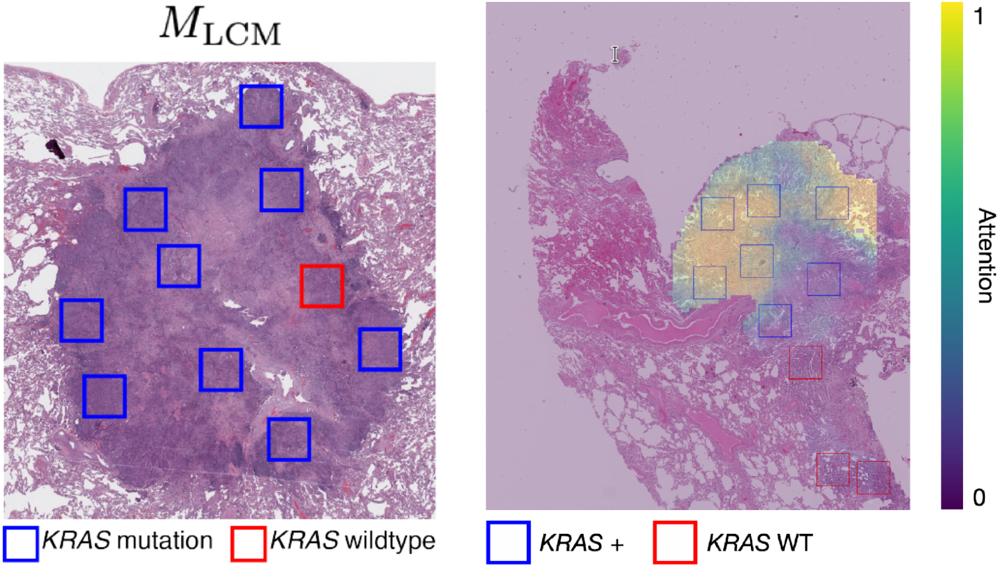
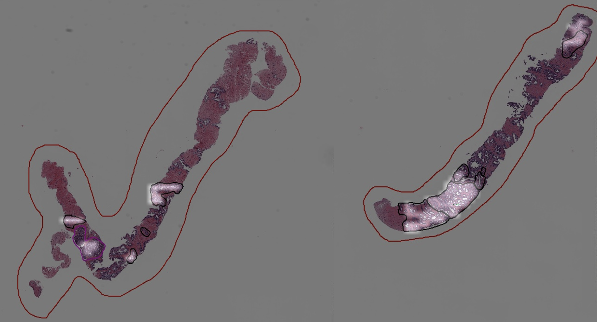

|
I am a third-year undergraduate student at the University of Rochester (URoch) majoring in Computer Science and Applied Mathematics. I am fortunate to work with Chenliang Xu at URoch and Thomas Serre at Brown. My current research focuses on:
Email / CV / Google Scholar / Github |
{kind=link}
|
|

|
Sizhe Li, Yapeng Tian, Chenliang Xu Under Review Leveraging temporal synchronization and association within sight and sound is an essential step towards robust localization of sounding objects. To this end, we propose a space-time memory network for sounding object localization in videos. |
|  |
Sahar Shahamatdar*, Daryoush Saeed-Vafa*, Drew Linsley*, Sizhe Li, Sohini Ramachandran+, Thomas Serre+ (Equal contribution*, Equal advising+) NeurIPS2020 LMRL Workshop Molecular profiling of cancers is necessary to identify the optimal therapeutic options for patients. However, these assays are time-and-resource-intensive to perform, and they cannot accurately capture mutational heterogeneity. Here, we present a novel approach to address these issues. |
|  |
Ohad Kott*, Sizhe Li*, Drew Linsley, Ali Amin, Bora Golijanin, Dragan Golijanin, Thomas Serre, Boris Gershman (Equal contribution*) The Journal of Urology, 2020 Deep learning has shown promising early results in the diagnosis and grading of prostate cancer. However, training such algorithms typically requires a large amount of manually annotated training data. To solve this issue, we developed a weakly supervised approach for the diagnosis and gleason grading of prostate core biopsies. |
|
Website template from Jon Barron. |